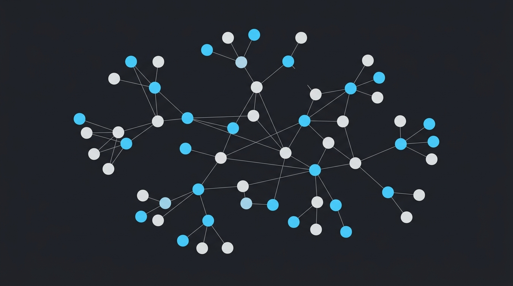

Cluster player identities, detect alt account networks, and trace shared hardware serials in real-time.

Your workspace tabs don't contain any account logs yet. Process logs in the Workspace to visualize identity networks and alts in real-time.